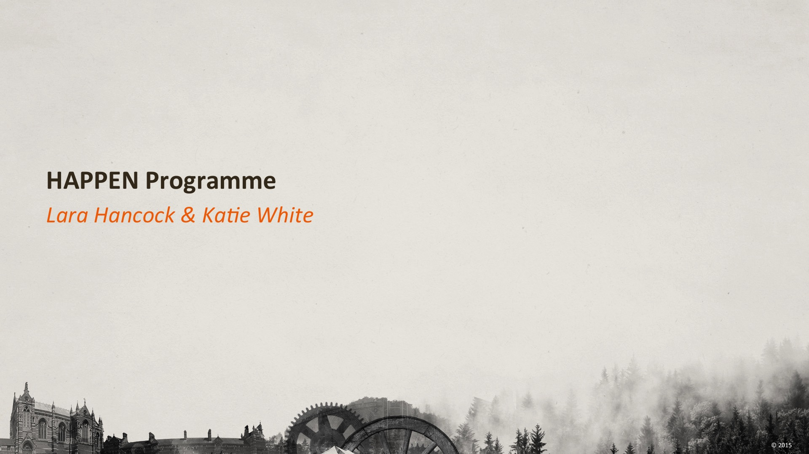
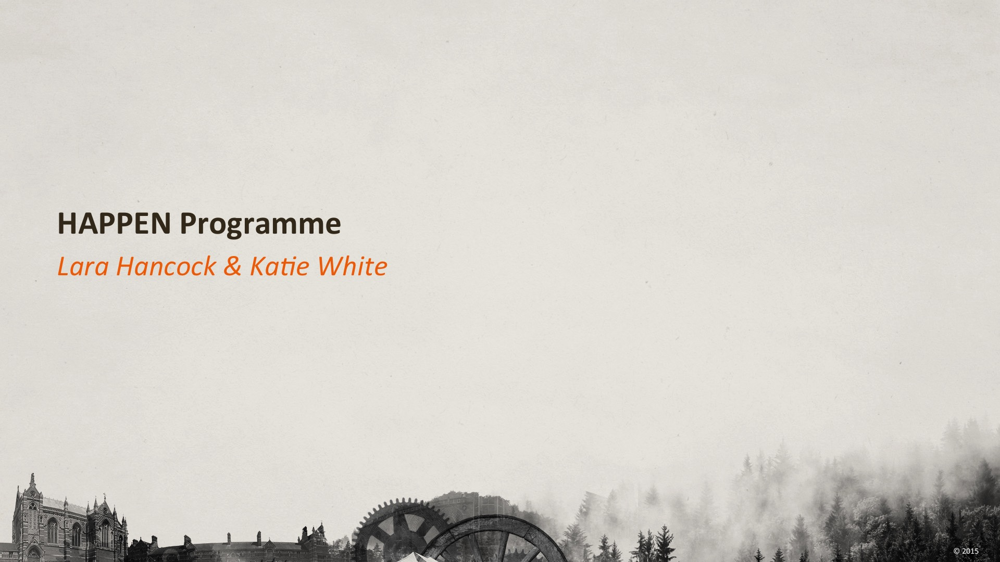

Slide 1 of 17
Quarter
Half
Three Quarters
00:00
- 00:00 | 00:00
Slide 1 of 17
Slide 1 of 17
Quarter
Half
Three Quarters
Slide 1 of 17

Following an honours degree in equine science and agriculture, Lara switched her farming diversification insights for ethical pharma, joining the industry 11 years ago with Schering-Plough (SP) as a medical sales representative.
Whilst working in the industry’s various field roles Lara found herself constantly drawn to working with Key Opinion Leaders (KOLs) and as a result secured a Professional Relations post allowing her to work with Global allergy KOLs. This role further consolidated her passion for medical education and refined her vision to successfully establish and go on to manage a team of nine National Professional Relations Managers across SPs/MSDs portfolio of primary and secondary care products.
Three years ago Lara moved into medical communications where she has continued to broaden her therapy area knowledge now covering, Allergy, Anaesthetics, CV, HCV, Immunology, PAH, Respiratory, and Substance Misuse. She has been responsible for managing both small and large account teams supporting overall client service in the delivery and mix of publications and meetings.
When not working Lara can normally be found amongst the company of her menagerie (dog, cat, horses). She competes in dressage. When not riding she can often been found shaking her tail at various music concerts and festivals.

Katie gained a BSc in Biochemistry from the University of Bristol in 2003 and a PhD in Cardiovascular Gene Therapy from the University of Glasgow in 2007. Before joining the Fishawack Group of Companies as a Medical Writer she spent several years working as an academic research scientist across a range of subjects including cardiovascular disease, respiratory disease, stem cell biology and RNA technologies. During this time Katie wrote a number of primary research and review articles and presented her work at several international meetings. She also enjoyed working on a public engagement project, using zombies to explain current biomedical research to teenage and adult audiences.
In her spare time Katie enjoys an active life in the outdoors, amongst other things, hill walking, kayaking and running. She regularly competes in races, running anything from 5 km to a marathon.
Martin brings to Fishawack a broad background in digital design and development. After completing an Interactive Media Diploma in 2009, Martin went on to gain a BA (Hons) degree in Video Games Design and Development. Since joining the Fishawack Group in 2011, Martin has applied his design skills in developing websites and user interfaces for a variety of Fishawack’s services and digital offerings.
In his spare time, Martin still enjoys playing video games, both for fun and in competition – StarCraft 2 being a game that he regularly plays in tournaments. A self-professed geek at heart, Martin also admits a love for philosophy, technology and comic books.

Mike joined the Fishawack team in February 2012 as a software developer.
Having gained a diploma in C++ computer games’ programming, Mike began developing his own iPhone software and games, to critical acclaim. His programming talents are now being put to good use in further expanding the Fishawack Digital Team’s capabilities!
Mike plays for a football team in Wigan, UK. He also plays the guitar, having learned by watching YouTube videos. He enjoys socialising with friends and is a HUGE Manchester United fan.
Chai has a Master of Physics and Astrophysics honours degree. After completing some modules in programming, he decided to teach himself more programming languages, leading to employment at Fishawack as a developer.
In his spare time Chai enjoys playing video games, rock climbing, exercise and playing the electric guitar, and is hoping to take up sky diving as a regular hobby.

Ross is a BSc (Hons) qualified computing professional with over 8 years’ experience as a professional software developer, writing bespoke software solutions within the construction, land referencing and parking industries. Specialising in Microsoft development technologies, Ross has worked as both an analyst and developer on a diverse range of systems from bridge management software through to a suite of applications to manage the London Congestion Charge Scheme which supports over 20,000 transactions a day.
Working closely to technical specifications and industry standards, Ross is keen to utilise the latest evolving technologies to ensure that the related benefits are passed on to the end user experience.
Ross’s love affair with programming began on a BBC Micro where summer holidays would be spent coding simple computer games onto cassette tapes. This is a passion he continues to this day, albeit for PCs and smart phones.

Phil joins the Fishawack Group of Companies to lead the Digital Solutions team and bring key strategic direction and expert technical development knowledge to the whole group.
Phil trained in Graphic Design and Animation, but shortly after completing his BA and leaving education he decided a career in digital delivery was the right direction. Phil is passionate about digital with over 15+ years’ experience in pharmaceutical digital delivery, having worked at AstraZeneca and across multiple other medical communications agencies. He has a very detailed knowledge of digital multichannel delivery, well-suited to the varied deliveries across the Fishawack group.
Phil is absolutely technology and gadget mad as well as a keen runner and cyclist. He can often be found analysing his performance data across multiple applications and wishing he could someday be an elite athlete (a long time ago).